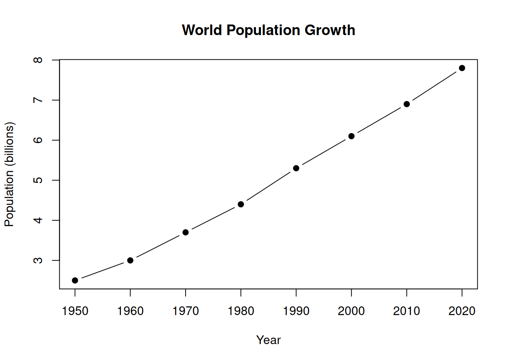

library(ellmer)
api_key <- Sys.getenv("ESPM_288_KEY")
if (nchar(api_key) == 0) stop("ESPM_288_KEY not set")This tutorial introduces ellmer, the tidyverse R package for working with large language models, using the NRP managed LLM service as our backend. The NRP endpoint is OpenAI-compatible, provides access to several frontier open-weight models, and is free to use for researchers.
Setup
You’ll need an API key for the NRP endpoint. Store it as ESPM_288_KEY in your environment (e.g. in ~/.bashrc):
export ESPM_288_KEY=your_key_hereInstall ellmer if needed:
install.packages("ellmer")Connecting to the NRP endpoint
The NRP LLM service runs at https://ellm.nrp-nautilus.io/v1 and exposes an OpenAI-compatible API, so we use chat_openai_compatible(). We’ll wrap it in a helper that keeps the connection details in one place:
nrp_chat <- function(model = "qwen3-small", ...) {
chat_openai_compatible(
base_url = "https://ellm.nrp-nautilus.io/v1",
model = model,
credentials = function() api_key,
...
)
}Available models include qwen3, qwen3-small, gpt-oss, minimax-m2, and kimi. We’ll use qwen3-small (Qwen 3.5 27B) throughout — it’s fast and capable.
Basic chat
Create a chat object and call $chat():
chat <- nrp_chat(
system_prompt = "You are a helpful assistant. Be concise.",
echo = "output"
)
chat$chat("What is R, in one sentence?")
R is an open-source programming language and environment specifically designed
for statistical computing and data visualization.The chat object is stateful — each call to $chat() appends to the conversation history, so follow-up questions have context:
chat$chat("What packages does it use for data visualization?")
R primarily uses the **ggplot2** package for static graphics, **lattice** for
complex multivariate data, and **plotly** for interactive visualizations,
alongside built-in base functions.Tool calling
Tool calling lets the model invoke R functions to answer questions it couldn’t otherwise answer — live data, computations, database lookups, etc. You define a function, register it with register_tool(), and the model decides when to call it.
Here we give the model a function that looks up approximate species counts by ecosystem:
get_species_count <- function(ecosystem) {
counts <- c(rainforest = 40000, coral_reef = 4000, temperate_forest = 6000)
n <- counts[tolower(gsub(" ", "_", ecosystem))]
if (is.na(n)) "unknown" else paste(n, "species")
}
chat2 <- nrp_chat(echo = "output")
chat2$register_tool(tool(
get_species_count,
description = "Returns approximate species count for a named ecosystem type.",
arguments = list(
ecosystem = type_string("The ecosystem type, e.g. 'rainforest', 'coral reef'.")
)
))
chat2$chat("How many species live in a coral reef compared to a rainforest?")◯ [tool call] get_species_count(ecosystem = "coral reef")● #> 4000 species◯ [tool call] get_species_count(ecosystem = "rainforest")● #> 40000 species
According to the data:
* **Coral Reefs** have approximately **4,000 species**.
* **Rainforests** have approximately **40,000 species**.
This means that, in this approximation, rainforests support about **10 times
more species** than coral reefs.The model called get_species_count() twice — once per ecosystem — then synthesized the results. The ◯ and ● markers show the tool call and its return value.
Structured data extraction
$chat_structured() guarantees the response matches a schema you define using type_* functions. This is useful for parsing text into data structures you can work with programmatically.
Important
Most open-weight models need an explicit system prompt for extraction tasks. Without it, models respond conversationally (“Hi, I’m an AI assistant!”) instead of extracting from the text — producing hallucinated names, function-style identifiers, or their own model name in the output fields. Adding a short extraction system prompt fixes this reliably across all NRP models.
extraction_prompt <- "Extract the requested fields from the user's text. Do not respond conversationally."Extracting a single record
chat3 <- nrp_chat(system_prompt = extraction_prompt)
result <- chat3$chat_structured(
"The golden poison dart frog (Phyllobates terribilis) lives in Colombian
rainforests, grows to about 5.5 cm, and is listed as endangered.",
type = type_object(
common_name = type_string("Common name of the species"),
scientific_name = type_string("Scientific (Latin) name"),
habitat = type_string("Primary habitat"),
length_cm = type_number("Body length in centimetres"),
status = type_enum(
"IUCN conservation status",
values = c("least concern", "vulnerable", "endangered", "critically endangered")
)
)
)
str(result)List of 5
$ common_name : chr "The golden poison dart frog"
$ scientific_name: chr "Phyllobates terribilis"
$ habitat : chr "Colombian rainforests"
$ length_cm : num 5.5
$ status : chr "endangered"Extracting a table
For tabular output, define the schema as an array of objects — ellmer will return a data frame:
chat4 <- nrp_chat(system_prompt = extraction_prompt)
species_type <- type_array(
"A list of species",
items = type_object(
common_name = type_string("Common name"),
scientific_name = type_string("Scientific name"),
habitat = type_string("Primary habitat"),
endangered = type_boolean("Whether the species is endangered")
)
)
df <- chat4$chat_structured(
"List three well-known endangered amphibian species with their habitats.",
type = species_type
)
df# A tibble: 2 × 4
common_name scientific_name habitat endangered
<chr> <chr> <chr> <lgl>
1 Golden Toad Incilius periglenes Cloud forests of Monteverde,… TRUE
2 Amphibian Species N/A N/A TRUE Extracting from many prompts in parallel
parallel_chat_structured() runs the same schema extraction across a list of prompts concurrently, returning a tidy data frame where each row corresponds to one input:
prompts <- list(
"I go by Alex. 42 years on this planet and counting.",
"Pleased to meet you! I'm Jamal, age 27.",
"They call me Li Wei. Nineteen years young.",
"Fatima here. Just celebrated my 35th birthday last week.",
"The name's Robert - 51 years old and proud of it.",
"Kwame here - just hit the big 5-0 this year."
)
type_person <- type_object(
name = type_string("The person's name"),
age = type_number("The person's age in years")
)
chat5 <- nrp_chat(system_prompt = extraction_prompt)
parallel_chat_structured(chat5, prompts, type = type_person)[working] (0 + 0) -> 5 -> 1 | ■■■■■■ 17%[working] (0 + 0) -> 4 -> 2 | ■■■■■■■■■■■ 33%[working] (0 + 0) -> 3 -> 3 | ■■■■■■■■■■■■■■■■ 50%[working] (0 + 0) -> 0 -> 6 | ■■■■■■■■■■■■■■■■■■■■■■■■■■■■■■■ 100%# A tibble: 6 × 2
name age
<chr> <dbl>
1 Alex 42
2 Jamal 27
3 Li Wei 19
4 Fatima 35
5 Robert 51
6 Kwame 50
Note
The extraction system prompt is essential here. Without it, models answer as an AI assistant rather than extracting from each prompt — substituting their own name and a default age, or inventing function-style identifiers like greet_user. This behaviour was confirmed across minimax-m2, gpt-oss, kimi, and qwen3 on the NRP endpoint; qwen3-small is the only model that extracts correctly without the prompt.
Thinking mode
Several NRP models — including qwen3-small — have extended reasoning (“thinking”) enabled by default. The model works through the problem internally before responding, which improves accuracy on complex tasks but adds latency.
You can disable thinking by passing chat_template_kwargs via api_args. This maps directly to the extra_body parameter in the Python OpenAI client:
# Python equivalent
client.chat.completions.create(
model="qwen3-small",
extra_body={"chat_template_kwargs": {"enable_thinking": False}},
...
)prompt <- "How many times does the letter r appear in 'strawberry'?"
cat("--- Thinking ON (default) ---\n")--- Thinking ON (default) ---chat_think <- nrp_chat(echo = "output")
chat_think$chat(prompt)
The letter "r" appears **3** times in the word "strawberry".
Here is the breakdown:
s - t - **r** - a - w - b - e - **r** - **r** - ycat("--- Thinking OFF ---\n")--- Thinking OFF ---chat_no_think <- nrp_chat(
echo = "output",
api_args = list(chat_template_kwargs = list(enable_thinking = FALSE))
)
chat_no_think$chat(prompt)To find the number of times the letter **r** appears in the word "strawberry",
let's break down the word letter by letter:
1. s
2. t
3. **r** (1)
4. a
5. w
6. b
7. e
8. **r** (2)
9. **r** (3)
10. y
The letter **r** appears **3** times in "strawberry".
Note
Thinking tokens are returned in a separate reasoning_content field in the raw API response. ellmer does not currently display them, but their effect is visible in response latency and (often) answer quality on harder problems.
The kimi model uses a slightly different parameter name:
# For kimi model
nrp_chat(
model = "kimi",
api_args = list(chat_template_kwargs = list(thinking = FALSE))
)Vision (image input)
Several NRP models including qwen3-small are multimodal — they accept images alongside text. ellmer provides three helper functions for supplying image content:
content_image_url()— a remote image URLcontent_image_file()— a local file pathcontent_image_plot()— the current R plot device
Pass them as extra arguments to $chat():
Image from a file
Use content_image_file() for local images — ellmer base64-encodes the file and sends it inline. Use content_image_url() when the model server can reach the URL directly.
# ellmer ships a sample PNG we can use for demonstration
sample_img <- system.file("httr2.png", package = "ellmer")
chat_vis <- nrp_chat(echo = "output")
chat_vis$chat(
"What does this image show?",
content_image_file(sample_img, resize = "none")
)
This image shows the logo for **httr2**, which is a popular package used in the
**R programming language**.
Here is a breakdown of the visual elements:
* **Text:** The white, cursive text "httr2" is prominent at the top.
* **Imagery:** Below the text is a red silhouette of a baseball player
swinging a bat. To the left is a small red baseball with "www" written on it.
* **Background:** The design is set inside a dark blue hexagon.
**The Context:**
The name "httr" is a pun on "hit 'er." Therefore, the logo uses a baseball
theme where the batter is "hitting" the "www" ball. This package is used to
handle HTTP requests (like connecting to websites or APIs) within R. This
specific image is the logo for the newer, second version of that package
(httr2).Image from a plot
content_image_plot() captures whatever is currently on the R graphics device, making it easy to ask the model to interpret your data visualisations:
# Create a plot, then ask the model to interpret it
plot(
x = c(1950, 1960, 1970, 1980, 1990, 2000, 2010, 2020),
y = c(2.5, 3.0, 3.7, 4.4, 5.3, 6.1, 6.9, 7.8),
type = "b", pch = 19,
xlab = "Year", ylab = "Population (billions)",
main = "World Population Growth"
)
chat_plot <- nrp_chat(echo = "output")
chat_plot$chat(
"Describe the trend shown in this plot and comment on what may have driven it.",
content_image_plot()
)
Based on the provided plot, here is a description of the trend and an analysis
of the likely drivers behind it.
### **Description of the Trend**
The plot illustrates a **steady, consistent, and nearly linear increase** in
the world's population over a 70-year period (1950–2020).
* **Starting Point:** In 1950, the global population was approximately **2.5
billion**.
* **Ending Point:** By 2020, the population had risen to just under **8
billion**.
* **Rate of Growth:** The line climbs upwards at a remarkably constant rate
throughout the decades shown. There are no visible dips or plateaus; it is a
continuous march of growth, adding roughly 100 million to 150 million people
every decade during this specific timeframe.
### **Drivers of the Trend**
Several major historical and technological shifts occurred during this period
that drove this population boom, primarily by reducing death rates while birth
rates remained relatively high:
1. **The Decline in Mortality (Death Rates):** This is the single biggest
factor.
* **Medical Advances:** The widespread introduction of antibiotics (like
penicillin in the 1940s) and vaccines (for diseases like polio, smallpox, and
measles) drastically reduced deaths from infectious diseases.
* **Sanitation and Public Health:** Improvements in clean water access,
sewage systems, and hygiene practices reduced the spread of fatal illnesses.
* **Reduced Infant Mortality:** Better healthcare for mothers and babies
meant that far more children survived to adulthood compared to previous
centuries.
2. **The Green Revolution (Food Security):**
* Beginning in the 1950s and 60s, agricultural productivity skyrocketed
due to the development of high-yield crop varieties, synthetic fertilizers, and
pesticides. This allowed the Earth to support a much larger population without
suffering the widespread famines that previously acted as a population "check."
3. **Increased Life Expectancy:**
* As conditions improved, the average human lifespan increased
significantly. In 1950, global life expectancy was around 46 years; by 2020, it
had risen to nearly 73 years. This means people are staying alive longer,
adding to the total count.
4. **Demographic Transition:**
* The world was in a specific phase of the "Demographic Transition
Model." While birth rates eventually began to drop in developed nations, they
remained high in developing nations for a longer period. This created a
"population momentum" where the number of births significantly outnumbered
deaths for several decades.